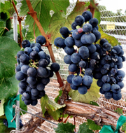

|
Viognier is a white wine grape variety that has the potential to product full-bodied wines with a lush, soft character.
The Viognier varietal has more natural aromatics that include notes of peaches, pears, violets & minerality. |
|
 |
||
 |
||
 |
||
 |
||
 |
They are known as one of the six grapes allowed in the blend of red Bordeaux wine. The grapes take on an oaky flavor when aged in barrels. |
 |
|  | ||
For more on the seven varietals of grapes we use in our red wines, go to our Products page
After a long day of picking grapes at the local vineyards, the grapes are brought to our facility.
When they come in from the vineyard, the grapes are still attached to the stems.
They are carefully gathered to be placed in the crusher / de-stemmer.
Secondary fermentation, also known as Malolactic fermentation, occurs after primary fermentation and is useful for creating wines that have a smooth, buttery texture.
After secondary fermentation, the wine is poured into oak barrels or other tanks for several months of barrel aging.
Throughout the aging process, the wine will be monitored for sulfite levels, pH and several other parameters to maximize color, flavor and smell.
The crusher / de-stemmer machine first crushes the grapes and then spins the clusters to remove the stem.
The stems spit out of the machine and the newly crushed grapes fall down the slide into the fermentation bins.
After cold soaking, the grapes will begin primary fermentation where they will be closely monitored to determine when fermentation has completed. Primary fermentation, with the help of specially designed yeast strains, converts the sugars in the grapes to alcohol.
After fermentation, the grapes are pressed to extract the juice and leave behind the skins.
At the time of crushing, the winemaker will decide if the must should be cold soaked before primary fermentation using dry ice pellets.
This aids in the extraction of color, or tanins, from the grapes giving the wine a rich, dark color.
The newly crushed grapes, or grape must, gets a good once-over to remove any remaining stems, leaves or other organic material that we do not want fermenting with our grapes.
Grape Varietals In Our Red Wines
Barbera
The Barbera grape is an Italian varietal featuring dark-skinned grapes and tends to be naturally high in acidity. Due to its high acidity, Barbera can be grown in warmer climates such as Sonoma Valley and the Sierra Nevada foothills in California.

Malbec
The Malbec is a black-skinned grape with recent fame for wines coming out of Mendoza, Argentina. Malbec is originally from Cahors, France but with its multinational production, it has become a strong presence in California and a major part of the Meritage blend in the United States.

Sangiovese
The Sangiovese grape is a dark-berried varietal and is the most commonly known varietal in many of the core Italian wines. In more recent years, Sangiovese has been used to create several high quality blends including Brunello di Montalcino, Chianti and the "Super Tuscans".

Cabernet Sauvignon
As the most famous and wide-spread red wine grape variety on Earth, Cabernet Sauvignon vines are highly adaptable to different climates and soil types yet the grapes always have a deep color and moderate acidity. Some of the finest examples of Cabernet Sauvignon can be found in Bordeaux (France) and California.

Merlot
The Merlot grape rivals the Cabernet Sauvignon in terms of popularity and international production. However, its popularity is derived from the Merlot grapes’ ability to soften varieties in which high tannins are found and create "easy drinking" wines.

Syrah
The Syrah grape is a dark-skinned grape and is also known as Shiraz in Australia. The wines typically have a deep color and are capable of improving over many years of aging. In the Southern Rhone region, Syrah is commonly blended with Grenache and Mourvedre to create the rising varietal, the GSM (Grenache, Syrah, Mourvedre) blend.

Carignane
The Carignan (or Carignane in California) grape is a black skinned wine grape native to northern Spain. Rarely made as a varietal wine, Carignane is commonly blended to give wines more body and depth of color.